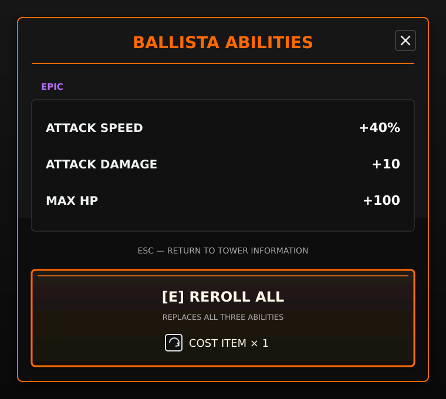

Designing the game I want to play
I lead the game rules, progression, resource costs, and moment-to-moment interactions. My main question is what makes a player excited to head out for supplies, then return home with a plan for their next defense.
Survival base-defense / Solo project
Scavenge by day. Build and defend by night.
Cute Carnage is my first solo game, and the project I started after graduation with one goal: make a game of my own and take it all the way to release. I’m building it in Unity, bringing together the things I love as a player: gathering supplies, growing stronger, and watching a carefully prepared defense hold against a crowd of zombies.
Vampire Survivors made me love the moment when a weapon combination becomes powerful enough to overwhelm a screen full of enemies. Project Zomboid made scavenging feel like preparation for a story that could go wrong. I want Cute Carnage to bring those feelings into a 3D world, with a home base at its heart and towers the player can shape around their own playstyle.
The prototype already lets me explore that idea through gathering, construction, repairs, and automatic tower combat. I’m now working toward a complete seven-day survival experience. The longer-term goal is 30 days, with cute low-poly characters and increasingly intense combat that leaves its mark on the world.
I lead the design and use AI tools to help bring it into the game.
I lead the game rules, progression, resource costs, and moment-to-moment interactions. My main question is what makes a player excited to head out for supplies, then return home with a plan for their next defense.
I arrange the village, gathering spots, and base around exploration and preparation. For UI, I start with wireframes, work through information hierarchy and intuitive control placement, then build that structure in Unity.
I use Claude Code in VS Code to support programming, while I define the intended behavior and try it in the game. This lets me keep moving between design decisions and the experience those decisions create.
I work with ChatGPT to shape ideas, organize the GDD, and think through how the systems fit together. I make the final design decisions and use the documents to keep the project focused as it grows.
I generated the main-character concepts with ChatGPT, then brought the character through modeling, rigging, and animation integration into Unity. I also use Meshy AI for art assets, choosing a cute, compact visual style for the world.
As a solo developer, I choose where to spend my time. Fixed construction slots let me focus on tower choices, upgrades, and the feeling of defending a base while keeping the building system manageable.
How can the way a player spends the day shape the tower build that survives the night?
I want the limited daylight to give each trip a purpose. Do I gather wood to strengthen the perimeter, or look for scrap for my next tower upgrade? The resource I bring home should help me make a meaningful change to the base.
I’m designing toward different resource destinations and more ways to shape a tower build. The fun I’m chasing is the connection between a decision made during the day and the moment that preparation pays off at night.
The systems, decisions, and feedback that shape the player experience.
Players can gather wood, food, and scrap before daylight runs out. I’m building toward distinct destinations: village, forest, market, and factory. I want the next upgrade a player has in mind to influence where they explore and what they bring home.
Building, upgrading, and repairing turn gathered supplies into a stronger home base. Fixed slots keep those interactions direct. Fence controls are working, and I’m refining their layout while connecting the new tower panel. I’ll tune costs around the full survival loop as it comes together.
Towers engage the nearest zombie in range, while zombie attacks deal damage at the contact point of their animation. That gives me the foundation for readable combat. Next, I want impacts, trails, sound, and the aftermath of a fight to make every successful defense feel satisfying.

I want players to find a combination of towers they enjoy and keep making it stronger. Extra projectiles, wider flames, or faster attacks could change how a favorite tower feels. Evolution and randomized abilities are the next layer I’m designing toward.
A day of choices becomes a night of consequences.
One change that brought the game closer to the experience I want.
I originally split daytime exploration and nighttime defense into separate scenes. But moving the player into another scene at sunset broke the sense that this was one place they were exploring and protecting.
I brought both phases into one scene and now switch day and night through events. The player stays in the same world, so the place they prepared during the day is the place they defend at night.
This also let me remove the cross-scene saving and transfer of building and resource data. I checked the existing systems while removing those dependencies, leaving a simpler project that is easier to maintain.
I learned to think about the experience and the responsibilities of each system together. A simpler structure can support the feeling I want for the player and make it easier for me to finish the game.
Scroll through gameplay, UI ideas, and the world taking shape around them.
I want daytime choices to become nighttime stories: a tower that holds a busy approach, a fence repaired just in time, or an upgrade that makes a favorite weapon feel different. That connection is what keeps me coming back to build the next piece.
I’m focusing on UI and HUD so players can read the state of the game and act on it. Lighting, fog, phase notifications, combat effects, and sound will help give preparation and defense their own atmosphere.
My next milestone is a complete seven-day survival prototype. I’m developing the village and bringing the daily loop together before expanding the world, tower progression, and the longer 30-day challenge.
{kind=link}
{kind=link}